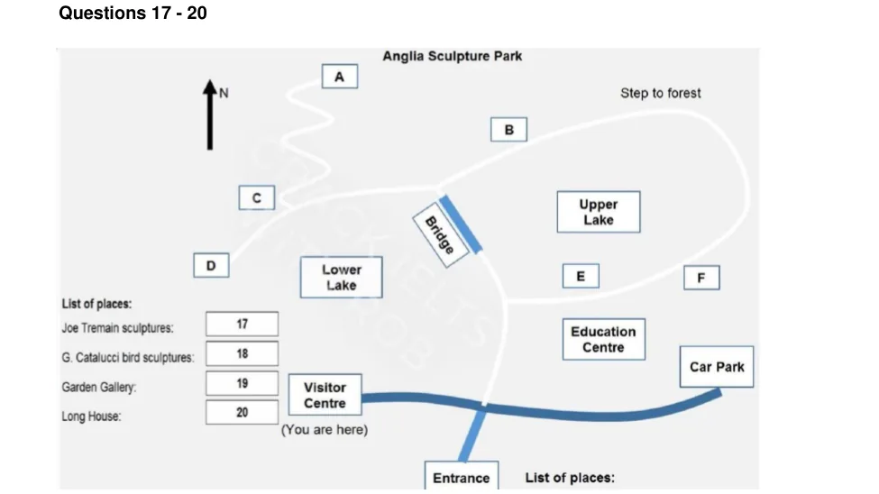
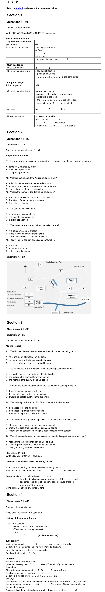

IELTS Listening: Test 2
Listening and questions
Section 1Questions 1–10
Questions 1–10
Complete the form below.
Write ONE WORD AND/OR A NUMBER in each gap
Hostel accommodation
Top End Backpackers Price per person: $19
Comments and reviews: + parking available, + staff are
1
+ nice pool
+ air-conditioning is too 2
Gum tree lodge
Price per person: $ 3
Comments and reviews: + good quiet location
+ pools and gardens
+ 4 In the dormitories
Kangaroo lodge
Price per person: $22
Comments and reviews: + downtown location
+ reception at the lodge is always open
+ no lockers in the rooms
+ the 5 are very clean
+ seems to be a 6 every night
Address: on 7 lane
Hostel information: + sheets are provided
+can hire a/an 8
+ 9 is included
+ a shared 10 Is available
Section 2Questions 11–20
Questions 11–16
Choose the correct letters A, B or C
Anglia Sculpture Park
11 The land where the sculpture is located was previously completely covered by forest is
12 What is unusual about the Anglia Sculpture Park?
13 What is the theme of Joe Tremain’s sculptures?
14 The path by the lower lake
15 What does the speaker say about the visitor centre?
16 Today, visitors can buy snacks and sandwiches

Section 3Questions 21–30
Questions 21–26
Choose the correct letters A, B or C
Making Report
21 Why did Leo choose instant coffee as the topic for his marketing report?
22 Leo discovered that in Australia, recent technological developments
23 What do the speakers agree about the Leo’s table of coffee products?
24 What do they decide about Shaffer's coffee as a market follower?
25 What does Anna say about originality in someone’s first marketing report?
26 What difference between school assignments and this report has surprised Leo?
Questions 27–30
Write ONE WORD ONLY in each gap.
Notes on specific section of marketing report
Executive summary: give a brief overview including the 27
Problems: Link each problem to a/an 28 which explains it.
Implementation: practical solutions to problems
Includes details such as participants, 29 and sequence section is often poorly done because of lack of
30
Conclusion: Don’t use raw material here
Section 4Questions 31–40
Questions 31–40
Complete the notes below:
Write ONE WORD ONLY in each gap
History of fireworks in Europe
13th - 16th centuries
fireworks were introduced from china
Their use was mainly to do with:
+ war
+ 31 (in plays as festivals)
17th century:
Various features of 32 were shown in fireworks
Scientists were interested in using from fireworks displays
To make human 33 possible
To show the formation of 34
London:
Scientists were distrustful at first
Later they investigated 35 uses of fireworks (Eg: for sailors) St.
Petersburg:
Fireworks were seen as method of 36 for people Paris:
Displays emphasised the power of 37
Scientists aimed to provide 38 18th century:
Italian fireworks specialists became influential Servandoni’s firework display followed the same pattern as a/an 39 The appeal of fireworks extended to the middle classes
Some displays demonstrated new scientific discoveries such as 40
Show the original book pages (picture)

Tap or click the pages to open them full size in a new tab.
Check your answers
Marking ignores capital letters and accepts plurals and the usual alternative answers. If your answer is right but not accepted, press My answer is also right under it.
Tapescript
Check your answers first, then the tapescript opens here.